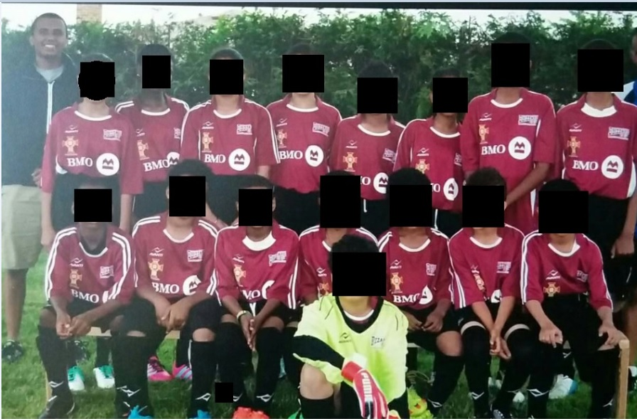

Introduction

Hello, Welcome to my page!
I am an Engineer by trade and an optimist at heart in the fight against climate change and I am motivated to accelerate the journey to a sustainable world.
Sustainability became a focus for me while on an internship in Alberta, Canada but a practical pathway to achieving it was not clear to me until I read the book ‘Natural Capitalism’ by Hawken and Lovins.
The book illustrated opportunities available within the current economic structure that companies need to take advantage of to limit or curb the negative impacts of climate change and achieve the other 16 SDGs (Social Development Goals) outlined by the UN.
I studied Chemical Engineering in Toronto, Ontario, and have had the opportunity to work in six different industries as a student, consultant and employee.
From Syncrude’s oil upgrader site in Fort McMurray to Capital One Financial in Toronto, I have added value to businesses by identifying key operational problems and forwarding effective and economical solutions both individually and as part of a team.
Operational optimization by analysis of real time data has been the core of my work to enhance and maintain efficient and robust operations.
Visit the ‘Testimonials’ tab of this webpage for comments from past clients and coworkers I have had the pleasure to work with.
What’s next?
I am thrilled to be joining the 100th cohort of the Ivey program to complete my MBA degree and become a well rounded leader.
I will share opinions on strategies the developing world, particularly sub-Saharan Africa, could follow to limit the negative impacts of climate change and achieve the 17 sustainable development goals outlined by the UN.
Work Experience
| Since 2019 |
Senior Process Manager - Customer Management |
Toronto, Canada |
Capital One Financial Corporation
- Manage operations of a $25M Insurance business by supervising day to day activities including managing relationship and work flow with the policy underwriter.
- Spearheaded a modernization effort by shifting investment focus on technology to seize resource and cost saving opportunities worth ~ $500K per year.
- Achieved ~ 92% reduction in process cycle time by implementing an autonomous file exchange system and an automated payment and refund fulfillment process in partnership with internal technology teams.
- Re-created business CTQs with focus on risk management, vendor service level and business performance standards with the appropriate financial and regulatory controls in place.
- Developed a revenue forecasting model to assist with work/investment planning and policy change decisions.
- Provide strategic advice and analytical insights on current business performance to the senior leadership team including the VP of Customer Management.
- Continually drive improvement initiatives to deliver error-free and scalable processes, while leveraging latest technologies and data platforms, including the development of a financial control and reporting dashboard.
- Led a migration of a partnership portfolio to a modern system of records from planning through implementation, conversion and validation.
- Facilitate and lead weekly team huddles, sprints and key meetings with senior stakeholders from business, technology, product, legal and compliance.
| 2015 - 2019 |
Process Consultant - Engineering, Industrial division |
Toronto, Canada |
- Supported a $96M project to launch a new product to the market by designing and commissioning processes and systems in compliance with industry practices and regulatory requirements.
- Responsible for daily project coordinating activities including resource planning, budgeting, cross functional liaison, status reporting and coordinating overall project activities with clients, vendors and sub-contractors.
- Improved overall process production time by identifying key bottleneck steps in production using DMAIC principles.
- Identified cost saving opportunities by analyzing the material supply process line and making recommendations to increase overall equipment efficiency (OEE) by 50%.
- Provided support & training to client production staff on operations and efficient good manufacturing practices.
| 2014 |
Chemical Engineer (Co-op) |
Fort McMurray, Canada |
- Daily plant monitoring, optimization and technical support of the heavy gas oil hydro- processing unit, using OSIsoft PI.
- Hands-on experience in Naphtha, light and heavy gas oil hydro-treating; field process engineering including process computer simulation using PRO/II and Aspen HYSYS.
- Continuous assessment of product quality, unit material and energy balance, yield and utility/chemical consumption.
- Planning and implementing refinery unit performance test runs.
- Worked closely with the maintenance team as well as the operations department in troubleshooting plant issues and equipment performance.
| 2013 |
Chemical Engineer (Co-op) |
Toronto, Canada |
- Improved manufacturing efficiency by proposing a filler layout design for two fillers after analyzing and planning work flow, space requirements, and equipment layout on AutoCAD
- Purchased, planned and supervised the installation of two vacuum pumps for six carton fillers.
- Performed line efficiency studies to address existing plant bottleneck and prepared reports with recommendations to improve plant performance.
- Created and modified single electrical line AutoCAD drawings for new fillers and motor control centers.
- Performed full energy balance on the plant to understand consumption portfolio.
- Conducted investigation on faulting equipment’s in production, prepared reports with recommendations. Initiated, executed and completed equipment and facility changes.
| 2012 |
Production Engineer (Co-op) |
Richmond Hill, Canada |
- Led and executed three different product scale-up projects from initiation through development.
- Updated and created new master formulas based on mixing speed studies conducted.
- Worked closely with the maintenance team as well as the production department in troubleshooting plant issues and equipment performance
| 2012 |
Chemical Engineering Student (Co-op) |
Toronto, Canada |
The Molson Coors Beverage Company
- Fulfilled production orders by coordinating the filling and emptying schedule of all the tanks in three different beer cellars.
- Operated from the control panel to control beer flow rate, pressure, tank level and CIP of cellar tanks, using IFIX, according to process schedules.
- Maintained turbidity, Carbon dioxide and oxygen levels within product specifications, and adjusting process parameters promptly to resolve quality issues.
Education
Master of Business Administration (MBA) Apr 2023
- Ivey Business School, Western University London, ON, Canada
Bachelors of Engineering
- Chemical Engineering, Ryerson University, Toronto, ON, Canada
Certificates
- Analytics for Decision Making Specialization, University of Minnesota
- Lean Six Sigma (Green belt) Ryerson University – Ydelay Toronto, ON, Canada
Additional courses
- Financial Reporting and Analysis, Investment Analysis, Economics, Statistics & Probability, Stochastic Processes,
Enhanced Oil Recovery.
Professional Associations
Professional Engineers Ontario (PEO) (Since 2015)
Volunteer Experiences
Chair, St. THEO Green Club
- The club’s mission is to raise awareness and mobilize the community to support projects designed to lower carbon footprint from energy sources
- The club has so far delivered on this mission by installing 110 new LED lights and an automatic thermostat at the site of the St. THEO church. In addition, the club has promoted and raised funds to support the competition of the GERD dam project (largest hydropower project in Africa)
Coach, Scarborough Blizzards Soccer League
- Coached a mixed gender U-12 soccer team from 2016 - 2018
Hobbies
Flying
For as far back as I can remember I have always been facinated with airplanes. I decided to take up flying during the 2020 lockdown and had my first flight (with an instructor) the summer of 2021. Its been an exciting journey!

Soccer Coach
I played soccer in middle school and in high school, with some success in the later years as a key member of a team that made it to the Toronto city finals. Inspired by my nephews’ interest in the game and their hunger for guidance, I volunteered to coach a mixed gender U-12 soccer team from 2016 - 2018.
Pictured below is the team that reached the semi-finals of the 2016 tournament. Go team ‘Portugal’!

Testimonials
Client

Senior leadership
Enku's energy and hustle have been amazing to watch. CCI is well on the way to the future thanks to him. His growth mindset, teamwork and persistence have helped the team get to this monumental inflection point. Thank you.
Adam Boby - Director, Capital One
Blog
Could religion help with the green revolution?
August,2021
The inspiration to start a green club out of the St. THEO church volunteer group stemmed from a documentary I watched on one of the oldest and most sacred monastery in the world, the Waldiba monastery.
Located in the North Western region of Ethiopia, Waldiba is stated to have been built in 490 AD and has been reliably producing many church scholars and teachers throughout its 1500 years of service.
The remote location of the site combined with low overall access to electricity in the country has left residents of this historical monastery to rely on burning wood and charcoal to meet their day to day energy needs.
Wood burning releases CO2 into the atmosphere and is one of the main air pollutants in developing nations.
Theoretically, the released CO2 can be offset by planting an equivalent number of trees but according to the UN the proportion of landmass covered by forests in Ethiopia has dropped from over 40% in the 20th century to close to 2.3% in the year 2000.
According to Global Forrest Watch, the country has lost 18.0kha of tree cover between 2010 and 2020, which is equivalent to approximately 8.74Mt in CO2 emissions.
While wood burning is not the only or main reason for the alarming decline in forest density in the country, the carbon dioxide pollution from wood burning is highest in countries where harvesting of wood for fires is least sustainable.
Large scale reforestation campaigns along with the implementation of sustainable wood harvesting practises will help balance emitted pollutants but this takes a significant amount of time and does not address the reliance on wood burning as an energy source.
This challenge has proven to be difficult to solve since it impacts millions of people predominantly settled sparsely across the country side with limited access to critical infrastructure.
(Large scale projects could have multiplier effect, understanding that, the St THEO club has advocated for the GERD hydroelectric dam and mobilized the community to support the project through fund raising).
The reliance on wood burning is common in developing nations where there is less organizational and social infrastructures. Entrepreneurs, governments and non-profit organization working on tackling this issue may benefit from understanding the important role religion plays in the day to day lives of many communities in the horn of Africa.
Developing religious institution centric frameworks could be instrumental in the green transition in the developing world for easier integration and widespread acceptance in those communities.
The St. THEO club’s mission is to raise awareness of climate change and its consequences and mobilize the community to act on initiatives we believe will help lower carbon footprint from energy sources. The club has so far delivered on this mission by installing 110 new LED lights and an automated thermostat at the site of the St. THEO church in Toronto Ontario.
Contact